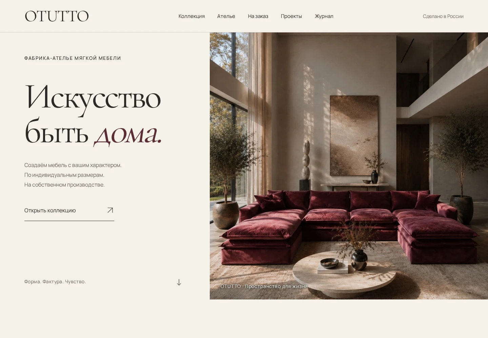

01 / DIGITAL
Websites and catalogs
I turn product data into structured catalogs, clear navigation and practical steps toward an inquiry.
See a catalog exampleWEBSITES & CATALOGS · PRESENTATIONS · PRODUCT DESIGN
I create catalog websites, presentations and visual content. I work with furniture, material selection and digital tools — from source information to a finished result.
SERVICES
Three connected areas, one practical approach.
01 / DIGITAL
I turn product data into structured catalogs, clear navigation and practical steps toward an inquiry.
See a catalog example02 / PRESENTATION
I prepare presentations, product images and commercial documents that are clear to customers.
See presentation work03 / PRODUCT
I select actual fabrics and textures, balancing visual character with construction and costs.
See material workCLIENT & APPLIED WORK
Work with a concrete task, process and outcome.

Digital catalog · Live project
From an Excel product list to a searchable, filterable catalog with a cart that prepares an inquiry.
View case
Website & brand assets · Furniture
A multi-page site, collection search, an AI-assisted pricing workflow, a brochure and proposal materials.
View case
Presentations · Sales materials
Production slides, advertising visuals and a proposal with product specifications and pricing.
View case
Product design · Textiles
Real fabrics, textures and color combinations selected with cost in mind; a visualization tests the outcome.
View caseEXPLORATION
Separate from client work: visual research and a self-initiated digital concept.

Independent artwork · Visual series
Four individual images of one conceptual object, exploring translucency, light, shape and scale.
View caseIndependent concept · B2B
Audience research, positioning, UX copy and a responsive 16-section demonstration site.
View caseWORKING TOGETHER
For a product catalog, a presentation or material selection, we can first define the scope, source materials and expected result.
See services and starting pricesContact
Tell us about your product, timeline, and the result you need. We will start with the brief and agree on the right scope.